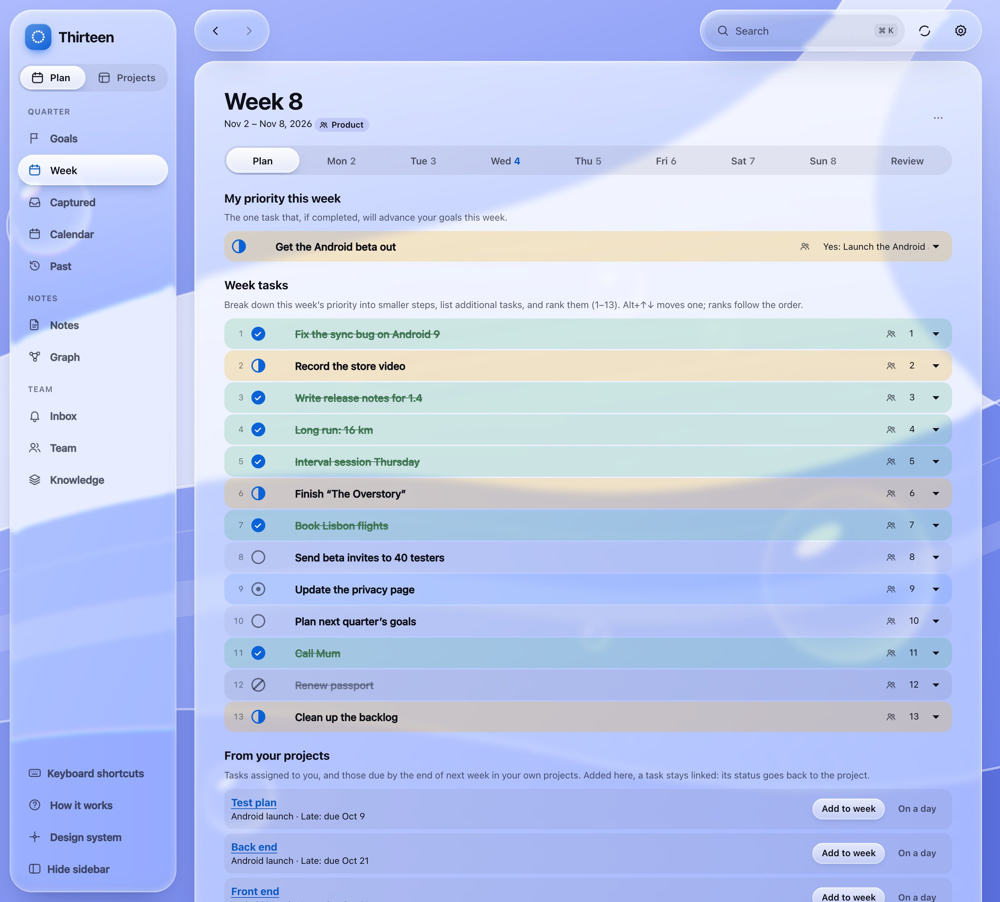
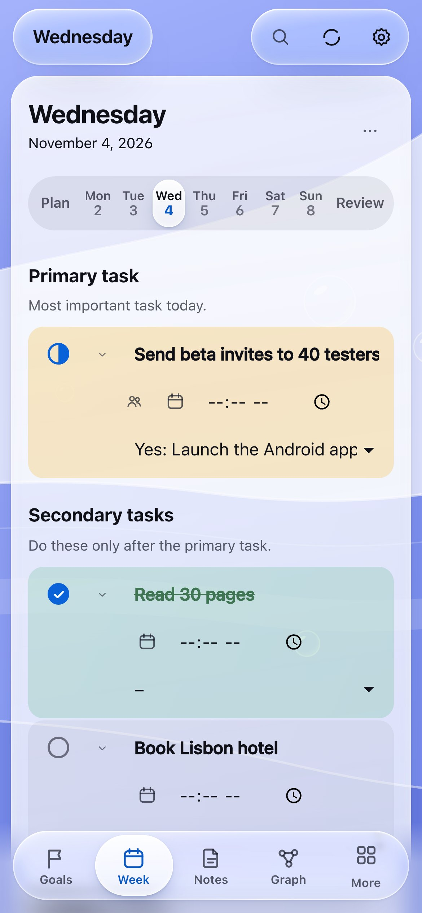

Thirteen
A quarterly planner and project scheduler, on six platforms.
A year is too long to plan in detail and a week too short to finish anything. Thirteen plans in 13-week cycles: a few goals, one priority each week, one primary task each day and a Sunday review. Projects schedules work bigger than a quarter, the way Microsoft Project does, and teams share boards and knowledge through a server they run.
Engineering highlights
- Rewrote the core in Rust (records, scheduler, sync, encryption, undo) and verified it against the previous build's recorded answers, including 20,000- and 100,000-task plans, with a speed bar it must meet.
- Critical-path scheduler: early and late dates, total and free slack, constraints and deadlines, checked against fixture projects.
- End-to-end encrypted team sync: keys are made on devices; the Node.js or Rust server and Postgres store only ciphertext. Admin console, roles, device approval, audit trail and a printed recovery key.
- One codebase, six targets with Tauri 2: Windows, Mac, iPhone, iPad, Android and a single-file browser build. Signed auto-updates and published checksums.
- About 70 browser scenario suites, many with several simulated teammates, plus security reviews of the Mac, Windows and Android apps.
46klines of code
351commits
6platforms
RustWebAssemblySolidJSTypeScriptTauri 2SwiftKotlinNode.jsPostgresDocker

One priority, then up to 13 ranked tasks with five statuses. Drag a task by its number to re-rank it.
